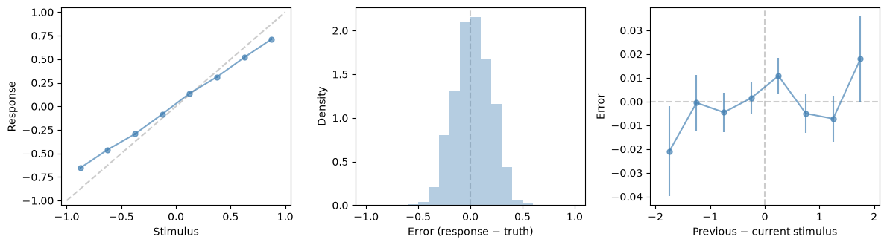

Continuous responses#
In a reproduction task the response is a value, not a choice: a dot appears somewhere on a line, and the animal pokes where it saw it. A response is correct within a tolerance of the stimulus, and stimulus and response share one axis, so errors can be read directly (see The stimulus axis). This tutorial takes a reproduction animal through the pipeline and shows the statistics, readouts and contrasts for continuous responses.
The animal is synthetic: eight sessions, with responses pulled towards the middle (slope 0.8), a small bias (0.02)
and noise (SD 0.12), and the laser on 30% of trials, where it flattens the slope to 0.6. From files, the config’s
task block sets type: reproduction and a tolerance; reproduction.yaml
is a complete example.
import matplotlib.pyplot as plt
from behav_utils import (Reproduction, ReproductionModel, TrialArrays, compute_stats, filter_trials,
generate_synthetic_animal, select_sessions)
model = ReproductionModel(bias=0.02, slope=0.8, noise=0.12, laser={'slope': 0.6})
animal = generate_synthetic_animal(model, n_sessions=8, trials_per_session=250, task=Reproduction(tolerance=0.1),
laser_fraction=0.3, rng=2)
sessions = select_sessions(animal, min_trials=0)
off = filter_trials(sessions, trial_type='non_opto')
on = filter_trials(sessions, trial_type='opto')
arrays = TrialArrays.from_sessions(off)
compute_stats(arrays, ['accuracy', 'response_bias', 'response_slope', 'error_sd', 'mean_abs_error',
'serial_bias']).round(3)
accuracy 0.426
response_bias 0.025
response_slope 0.789
error_sd 0.172
mean_abs_error 0.141
serial_bias 0.003
Name: value, dtype: float64
response_slope and response_bias recover the model’s slope and bias. error_sd is larger than the model’s
noise, because a slope below 1 adds an error that grows with the distance from the middle, and serial_bias is
about zero because this model has no memory of the previous trial. accuracy is the share of responses within the
tolerance.
Readouts#
The three readouts show the same things: the response curve, with the identity line a faithful reproducer would follow; the distribution of signed errors; and the serial-bias curve, flat here:
from behav_utils import (compute_error_distribution, compute_response_curve, compute_serial_bias,
plot_error_distribution, plot_response_curve, plot_serial_bias)
fig, axes = plt.subplots(1, 3, figsize=(12, 3.4))
plot_response_curve(compute_response_curve(arrays), ax=axes[0])
plot_error_distribution(compute_error_distribution(arrays), ax=axes[1])
plot_serial_bias(compute_serial_bias(arrays), ax=axes[2])
plt.tight_layout()

Statistics of binary choices are refused, and for this task there is no counterpart:
compute_stats(arrays, ['mu'])
---------------------------------------------------------------------------
RequirementError Traceback (most recent call last)
Cell In[3], line 1
----> 1 compute_stats(arrays, ['mu'])
File ~/work/behav_utils/behav_utils/src/behav_utils/stats/registry.py:184, in compute_stats(arrays, names, rng, strict)
182 entry = _PRODUCERS[_OUTPUT_TO_PRODUCER[n]]
183 if not entry.requires <= task.capabilities:
--> 184 require(task, entry.requires, n, entry.instead)
185 if rng is None:
186 rng = np.random.default_rng()
File ~/work/behav_utils/behav_utils/src/behav_utils/tasks/base.py:157, in require(task, needs, what, instead)
155 else:
156 parts.append('there is no counterpart for this task')
--> 157 raise RequirementError('; '.join(parts))
RequirementError: mu needs binary (responses are 0 or 1), stimulus_axis (a signed stimulus whose category is set by its side of the boundary at 0); reproduction has continuous, scored; there is no counterpart for this task
A laser contrast#
The laser was assigned per trial, so trials are the resampling unit and a permutation p is allowed. serial_bias
is left out: it depends on the order of trials, so trials cannot be resampled for it (see
Resampling units). curve=False skips the psychometric curve, which needs a binary
task.
from behav_utils import compute_delta_stat
d = compute_delta_stat({'off': off, 'on': on}, ['response_slope', 'response_bias', 'error_sd'], reference='off',
curve=False, n_bootstrap=200, n_permutations=200)
d.contrast('on').table().round(3)
| stat | diff | ci_lo | ci_hi | boot_p | perm_p | unit | |
|---|---|---|---|---|---|---|---|
| 0 | response_slope | -0.165 | -0.184 | -0.144 | 0.01 | 0.005 | trials |
| 1 | response_bias | -0.010 | -0.021 | 0.000 | 0.07 | 0.294 | trials |
| 2 | error_sd | 0.075 | 0.065 | 0.085 | 0.01 | 0.005 | trials |
The laser flattens the slope by about 0.17 (the model’s change is 0.2) and widens the errors, while the bias barely moves. With 200 permutations the smallest possible p is 1/201, about 0.005.
Where to go next#
The statistics reference defines each statistic for continuous responses.
Tasks, families and capabilities explains the two families.
Models simulates behaviour, the ideal observer included.